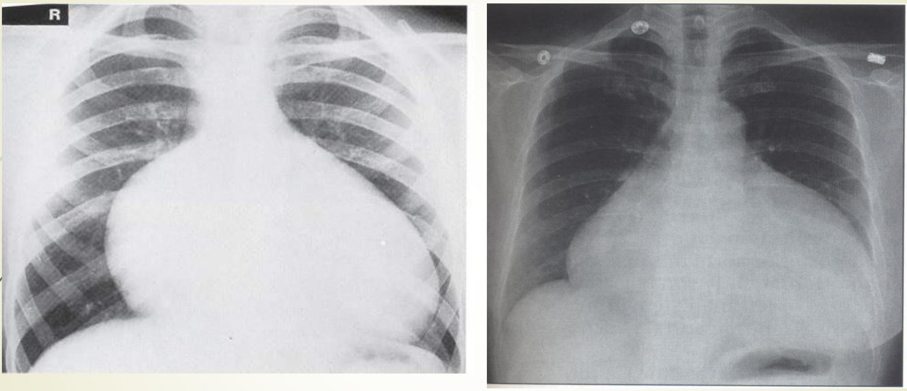
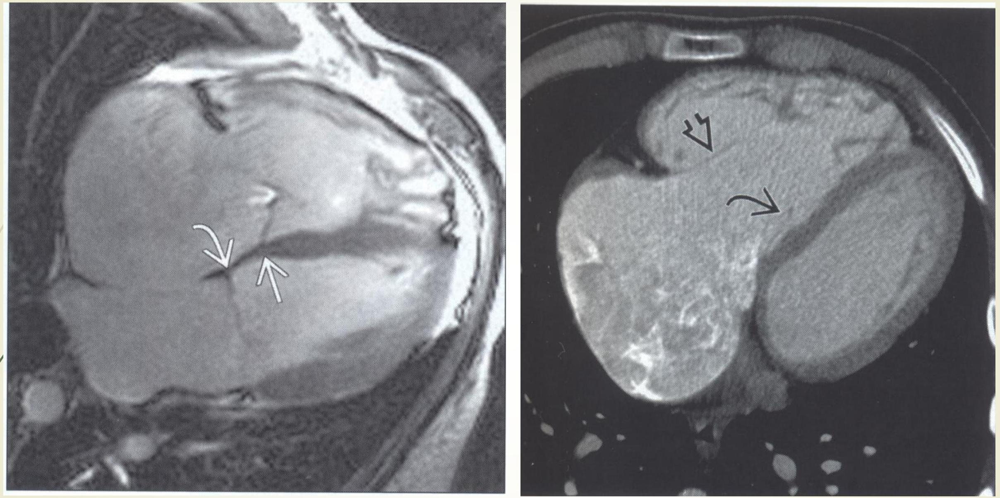

CARDIOVASCULAR IMAGING
COMPILED BY EFFIE NAILA
OUTLINE
- INTRODUCTION
- EMBRYOLOGY
- IMAGING MODALITIES
- CONGENITAL HEART DISEASES
- SPECIFIC CONDITIONS
INTRODUCTION
- The fetal heart develops from a series of complex and rapid changes which occur between the 2nd and 8th week of intrauterine life.
- During the 3rd to 5th weeks cardiac structures develop most actively and are most susceptible to adverse external influence e.g. rubella virus or drugs such as thalidomide resulting in congenital heart diseases (CHD).
EMBRYOLOGY
- The heart originates from the splanchnic mesoderm.
- The endocardial tube is the initial basic structure.
- The development is characterized by rapid and complex changes
-
5 dilatations develop in an initially straight longitudinal midline tube. These include:
- Common truncus arteriosus
- Bulbous cordis
- Common primitive ventricle
- Common primitive atrium
Adult Derivatives of the Primitive Heart
| Embryonic Dilatation | Adult Structure |
|---|---|
| Truncus arteriosus (T) | Aorta Pulmonary trunk |
| Bulbus cordis (B) | Smooth part of right ventricle (conus arteriosus) Smooth part of left ventricle (aortic vestibule) |
| Primitive ventricle (PV) | Trabeculated part of right ventricle Trabeculated part of left ventricle |
| Primitive atrium (PA) | Trabeculated part of right atrium Trabeculated part of left atrium |
| Sinus venosus (SV) | Smooth part of right atrium (sinus venarum)* Coronary sinus Oblique vein of left atrium |
NORMAL FETAL CIRCULATION
- Oxygenated blood is carried by the umbilical vein (UV) through the ductus venosus (DV) and IVC into the RA through the foramen ovale.
- SVC & IVC blood is passed into RA, RV & PA. Most of the RV output passes through the PDA into the descending aorta to supply lower parts of fetus and the umbilical arteries which supply the fetal placental plexus.
CHD IMAGING MODALITIES
- Plain radiography
- Echocardiography- First line to assess anatomy and function.
- Cardiac catheterization- definition of vascular anatomy.
- Radionuclide imaging - quantify left-to-right shunts, assess relative pulmonary perfusion.
- CT- description of cardiac and vascular anatomy in relation to other structures of the chest.
CHEST RADIOGRAPH: INDICATIONS
- Suspected CHD
- Cyanosis
- Cardiac failure
- Failure to thrive
- Difficult in feeding in the neonatal period
- Fainting snells
CHEST RADIOGRAPH CONT.
Standard Views Include:
- Erect PA/AP chest
- Left lateral
The roles of chest radiographs include providing clues to underlying CHD and planning further investigations.
It possesses limited use in neonates and young children and may show related skeletal
CHEST RADIOGRAPH ALLOWS ASSESSMENT OF:
- Cardiac and visceral situs situs solitus, situs inversus, situs ambiguous
- NB: 2/3 of the heart should be on the left side and 1/3 of the heart should be on the right, if vice versa dextrocardia
- Cardiac size & shape.
- Mediastinum- Aortic arch, PA, trachea indentation
- Pulmonary vasculature-normal, plethora, oligemia, congestion
CARDIAC SIZE MEASURMENT
Measure the transverse diameter of the heart and compare that of the chest - 50-55% in adults upto 60% in children
ECHOCARDIOGRAPHY
This gives a wealth of anatomical and physiological information without ionising radiation, patient discomfort or significant risk It is obtained by placing an U/S transducer on the chest wall to image the heart structures as a real- time 2- D slice.
It permits the rapid assessment of cardiac structure and function.
LV wall thickness and EF can be estimated
TYPES OF ECHOCARDIOGRAPHY
- Dimensional (M Mode)
- Dimensional MC used
- D
-
Doppler echocardiography ;
- CFI; ‘non-invasive’ angiogram
- Pulsed doppler echo (valves)
- continuous wave doppler
-
Contrast echocardiography
- Microbubbles in the venous circulation
Contrast Echocardiography
- Use of intravascular contrast effects produced when microbubbles of gas present in solution are injected into a peripheral vein or selected area of the heart via a catheter.
- Microbubbles are generated by rapid injection of saline, blood, indocyanine
INDICATIONS
- Myocardial perfusion can be investigated directly/indirectly after intracoronary/ venous contrast injection with/out DSA
- Better define anatomy not shown well on 2D E.g imaging the anomalous venous connections to the heart
- Enhancement of endocardial boundaries increasing sensitivity of wall motion abnormalities eq valvular requiraitation
Dopp1er Echocardiography
- Used to study venous flow from IVC, SVC, pulmonary vessels and flow across the valves
- Measure direction and speed of blood flowing through the heart and blood vessels
- Check for abnormal communication between left and right side of the heart and regurgitation
- Calculate cardiac output/ejection fraction
- Flow towards the transducer- red away from it - blue, and turbulence flow mixture of red and blue- yellow

CLINICAL APPLICATIONS OF ECHOCARDIOGRAPHY
-
Congenital heart disease
- Anatomical defects, shunts
- Stress echo
- Pericardial disease
- Coronary artery disease
- Cardiomyopathies
- Valvular disease
- Cardiac masses
- Diseases of the aorta
ANGIO- CARDIOGRAPHY
- Important technique for cardiac and great vessel anatomy
- Coronary angiography commonest
- transfemoral approach using Judkins or Amplatz catheters
- Pulmonary angiography; for possible embolism.
- Adv; Offers high resolution images of the heart and great vessels.
- Disadv ; Requires experienced hands and cardiac monitoring, invasive
CONT. Indications:
- CHD, valvular/myocardial disease, ventricular function
CONT. Technique;
- right sided structures studied by introducing catheter into a peripheral vein, femoral or antecubital or basilic
- left sided structures by introducing catheter into femoral artery retrogradely
- CM-LOCM 370 ; 1 ml/kg at 18-20 mls/s (adults), 1.5 ml/kg ( 0-1 yr ); 1.0 ml/kg ( >5 yrs )***
CONT. EQUIPMENT
- Equipment- fluoroscopy unit on a C-arm with DSA facilities, pressure recording device, ECG monitor, blood oxygen analyser, catheters ( pigtail, NIH), cournand catheter-for pressure measurements
- Angled views which place the pathological lesion at right angles to the Xray beam increase diagnostic accuracy of cardiography
- Complications; sudden death, arrhythmias, MI, C. Media s/effects


CARDIAC MRI
- Advantages; Provides anatomy, dynamic motion studies of function, flow and chemistry with minimal risk to the patient
Disadvantage
- expensive
- availability
- metallic implants
Clinical Applications of Cardiac MRI
- ventricular function analysis
- Myocardial function at rest and during stress
- Myocardial perfusion
- Measurement of coronary flow
- Valvular heart disease
- Pericardial pathology
- Cardiac tumors and thrombi
- Carrdiomyopathies
- Assessing great vessels- aortic/pulmonary disease
PULSE SEQUENCES USED
- Tissue characterization-done usingT1W, T2W, contrast enhancement and spectroscopy
- T1W-best anatomic depiction,
- Blood-show signal void
- Gradient echo-Impart bright signal to coherently flowing blood-white blood
- Fast spin echo- vascular wall bright, blood black
C/MRI-cont'd
- Gradient recalled echo-technique -applied for motion studies,to show flowing blood as well as cardiac motion
- ECG gated MRI of the heart-
- Velocity mapping sequences
- Images-tomographic slices,of any selected plane
MRI Cont'd
- Gadolinium -as contrast used in;
- myocardial perfusion
- MR angiography; time of flight MRA, phase contrast MRA, contrast enhanced MRA
- Myocardial infaction
- Ischemia
CARDIAC CT
- Good images of thoracic anatomy and major cardiac structures and large vessels
- CECT first line in imaging aortic rupture or dissection
- Calcification on the coronary vessels
- Evaluation of coronary vessels
Disadvantages;
- ionizing radiation, motion artifact
Triphasic CT
64 MDCT/MSCT
Multislice CT
Normal Coronary Artery CT Reconstruction
CARDIAC SCINTIGRAPHY
- Injection of radiophamarceutical to study the heart
indications;
- assessment of myocardial perfusion
- ischaemia,
- infarction
- viability.
- Ventricular function
- diagnosis and quantification of abnormal passages
Perfusion Studies
- Used to diagnose ischemia and m/infarction
- Radio- pharmaceuticals used include; Thallium 201
- Technetium 99m labeled tracers like tetrofosmin
Technique
- scans are taken in;stress and resting phases
- Stress induced by:- Physical exercise test: treadmill, bicycling. Pharmacologic stress test: dipyridamole, adenosine, dobutamine.
- The heart scanned in longitudinal, vertical and short axes
Normal Perfusion Scans
- Horse- shoe in vertical and long.axes and doughnut in short axis
- stress and rest images are same in normal myocardial perfusion
- Ischaemia-normal at rest and reduced at stress
- infarcted and scars -reduced in both
Axes
Myocardial Perfusion


Clinical Applications RNI
- Diagnosis of coronary heart disease
- Prognosis of CAD
- Myocardial infarction; infarct detection
- Myocardial viability and hibernation
- Other myocardial disease; alcoholic induced, viral, metabolic
- Valve disease
- arrhythmias
CHD

- Visceroatrial situs solitus, isolated dextrocardia.
- Situs ambiguous- central cardiac apex, transverse liver.
- Situs inversus.
Congenital Heart Defects
CHD has an incidence of 6-8 per 1000 at birth.
Risk Factors
- Genetic - Downs syndrome-25%
- Holt-Oram Syndrome
- Ellis van Creveld Syndrome
- Turner's, Noonans
- Alcohol.
- Prenatal Rubella infection, Toxoplasmosis.
- Drugs: Thalidomide toxicity---17% have a cardiac lesion.
- Gestational diabetes.
Patent Ductus Arteriosus
- Persistence beyond 10 days is considered abnormal.
- Accounts for 15% of all congenital heart diseases.
- Commoner in females (2-3:1)
- Associated with low birth weight, prematurity, high altitudes.
PDA CXR
- Prominent central pulmonary arteries.
- Cardiomegally.

PDA FINDINGS:
- Prominent central pulmonary arteries.
- Cardiomegaly.
- Enlarged left atrial appendage.
2D + Color Doppler Echo (PDA)

Secundum ASD- Accounts for 80%
Defect @ center

Normal Heart For Cf.
SECUNDUM ASD Image

- Apical 4 chamber view echo.
- Note the enlarged right chambers.
ASD B4 Eisenmenger
Note the pulmonary plethora:
- Large heart
- Large central pulmonary arteries.
- Large peripheral pulmonary arteries.
- Recruitment of upper zone arteries( Cephalization)
- No pulmonary edema.
- Patient had ASD.

Complications of ASDs.
- Eisenmenger syndrome.
- Enlargement of the right atrium causing tachyarrhythmias.
- Paradoxical thrombo-embc stroke.
- This patient initially had a large ASD with a major left to right shyht, Note the large central pulmonary arteries with peripheral pruning. Arrow points @ calcified It. pulmonary artery.

VSDs.
- One of the commonest anomaly (second only to bicuspid aortic valves). Incidence 3570/1m live births.
- 50% of patients with VSD have associated cardiac anomaly e.g. coarctation of the aorta.
- 80% are perimembranous & the vast majority(75%) of small ones close spontaneously.
VSD Anatomy
Lets us first understand the anatomy.
The Interventricular septum has two parts, the larger muscular and the smaller membranous part.
The membranous part is the posterosuperior region.
Membranous VSDs account for 80% of all VSDs.
Muscular VSDs tend to close spontaneously.
Its possible to have multiple VSDs at any part of the interventricular septum.

Congenital Cyanotic Heart Disease
-
For clinically detectable central cyanosis, there must be at least 5 g of reduced Hb per 100 ml of aortic blood. Occurs in 3 ways:
- Direct right to left shunt eg. TOF
- Transposition of great arteries.
- Common chambers eg. Common atria, common ventricle, truncus arteriosus.
TOF
TOF Pathology:
- Most common cyanotic heart lesion.
- Incidence: 3-5 per 10,000 live births.
- Primary hypoplasia of infundibular septum secondary to unequal partitioning of the conotruncus.
- Conotruncal septum displaced anteriorly, and its lowermost component, the Infundibular septum fails to fuse with the top of the IV septum.
-
Features include:
- Infundibular right ventricular outflow tract stenosis
- subaortic VSD
- Over-riding aorta
- Right ventricular hypertrophy
CONT
- Desaturated blood enters RA, flows through RVOT into lungs. Some blood shunts right to left through VSD into ascending aorta.
RADIOLOGY
- "Boot-shaped heart" = "coeur en sabot".
- Right ventricular hypertrophy.
- Concave pulmonary artery segment.
- Decreased pulmonary vascularity(oligaemia).
- Normal heart size at birth.
- Right aortic arch, mirror image branching (25%).

- boot shaped heart, concave pulmonary artery segment.
- Right aortic arch, elevated cardiac apex, pulmonary oligemia

- Parasternal long axis- VSD, over-riding aorta, CF doppler- right to left flow from RV to aorta.
Ebstein Anoma1y
- Downward displacement of septal & posterior leaflets of tricuspid valve.
- Insufficient separation of tricuspid valve leaflets and chordae tendineae from R† ventricular endocardium.
- Massive tricuspid regurgitation.
- Associated anomalies-PFO, ASD in 90%.
- Normal or decreased vascularity
- Rt. to Lt. shunt thru PFO causes cyanosis.
CONT.
- Inferior displacement of tricuspid valve leaflets into RV.
- Thin-walled, low-pressure "atrialized" segment of RV. tricuspid valve is grossly insufficient.
- RA blood flow is shunted rt. to It. across an ASD or PFO into LA. Some blood may cross the RVOT and enter PA.
CONT.
- Graphic-Downward displacement of posterior valve leaflet, incorporated into RV.
- MR cine- Dilated RA, low placement of tricuspid valve, atrialized RV.
IMAGING
- Radiography: Severe right sided cardiomegally.
- Echo- Rt chamber enlargement, enlarged tricuspid annulus, tricuspid regurgitation, PFO with Rt. to Lt. shunting.
- Treatment- Tricuspid valve replacement and/ or valvuloplasty
EBSTEIN ANOMALY
- Massive globular cardiomegally (RA dilatation), pulmonary oligemia.
- DDX: pericardial effusion
- Subcostal 4 chamber - displacement of tricuspid valve leaflets inferiorly.
- Color Doppler- severe regurgitation of the dysplastic tricuspid valve.
Ebstein Anomaly
- Mri cine- 16 mm distance btn septal leaflets of MV & TV(arrow).
- CECT- RA dilatation, apical displacement of septal tricuspid leaflet.
REFERENCES
- Grainger&allisons textbook of diagnostic imaging 5th edition
- Textbook of radiology and imaging. Volume 1. seventh edition. David Sutton